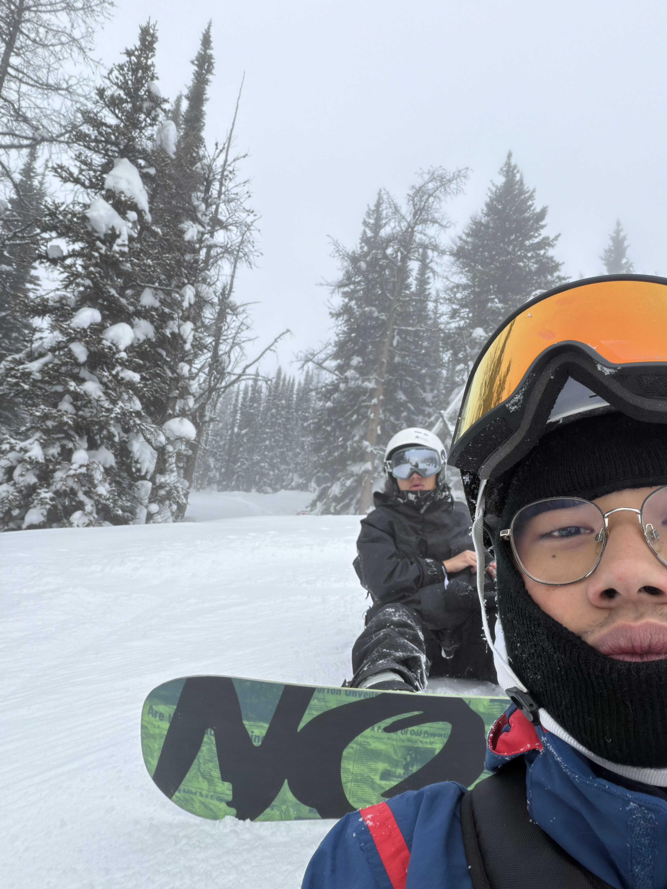

Who Is Jalen?
Jalen is a BCIS student at Mount Royal University in Calgary, originally from Winnipeg, Manitoba. He has a deep passion for music, art, and the outdoors. Whether he is behind the decks, out on a trail, or working on his next creative project, Jalen is always looking for ways to express himself and push his skills further. In May 2025, he will be moving to British Columbia to continue both his education and his art career.
DJing
DJing is one of Jalen's biggest passions. There is something about reading a crowd, selecting the right track at the right moment, and controlling the energy in a room that he finds endlessly exciting. What started as a curiosity turned into a serious craft one that he continues to develop and refine. From bedroom sets to larger events, Jalen wants to create memorable experiences for everyone.